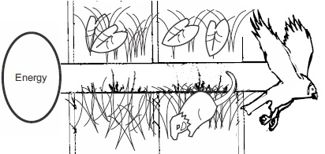

New Senior School Biology Practical Activity & Work Book one
Chapter
1
BIOLOGY & LIVING THINGS
Notable Concepts
Biological science
The scientific method
Usefulness and applications of
Biological science
Characteristics of living things
Energy and living organisms
Biology is the branch of science that studies living things.Biologists are scientists who investigate life.Biology being a science is studied by the use of the scientific method. The scientific method includes these steps
Defining or identifying the problem or question.
Observation
Forming a hypothesis (A temporary explanation for a set of observation).
Testing the hypothesis with an experiment or observation
Analyzing, drawing conclusions and recording results
Sharing findings through reporting and publishing results.
Accepting or rejecting the hypothesis. An accepted hypothesiswhich has been found to be repeatedly true experimentally within the limits of available evidence becomes a theory
A theory, which has been tested for a long time and found to be
consistent with new discoveries, is taken to be a law or a principle.
In carrying out experiments, care must be taken to eliminate all bias
that can lead to false results and conclusions. this informs the need
for a control experiment
A control experiment is an experimental set up which has all
factors affecting the result of the experimental subject to be constant except the one that is being tested which is the variable.
Biological science finds its applications and usefulness in
various fields and areas such as medicine, Agriculture, genetic
Engineering, food production industries etc.
Characteristics of Life
Understanding biology as a science poses the question: How do we
recognize life? Certainly, living and non living things have some
features, but there are some characteristics that are found in living
things only. As it is difficult to define life, a description of these
activities and properties that charactercterize living things gives
biologists an understanding of life and things that are living. These
characteristics are:
(1) MOVEMENT
(2) RESPIRATION
(3) NUTRITION
(4) IRRITABILITY OR SENSITIVITY
(5) GROWTH FROM WITHIN
(6) REPRODUCTION
(7) EXCRETION
(8) ADAPTATION TO THE ENVIRONMENT
While a non living thing may have one or a few of these
characteristics, only living things have all of them, therefore any
thing that has all the characteristics of life must be living.
fig1.1b:

Energy and Living Organisms
Energy is the ability to do work. All living things
need energy which they take in from their surroundings
and food and use for their life activities.
All life on earth depends on energy from the sun
(solar energy). This energy through photosynthesis
in green plants is transformed to chemical energy.All
animals depend on plants for their foods directly or
indirectly. Both
plants and animals utilize the chemical energy
contained in food to carry out life activities including
growth and reproduction.
The process of photosynthesis, which involves
energy consumption, storage and transformation, is
a building up process (anabolism). On the other
hand, respiration, which involves the release of
chemical energy in mechanical work, and heat
energy during work, is a breaking down process
(catabolism).
Both anabolism and catabolism comforms to
the first and second laws of thermodynamics.
the first law state that: Energy can neither be
created no destroyed but can be converted from one
form to another.The second law states that Energy
transformation is never 100% efficient as energy is
always lost to the surroundings as heat energy
General Questions
is the name of the procedure scientists follow to solve problems.
A preliminary explanation scientists give for a particular question is called
.
In any experiment, the factor that changes is called
.
A
can be regarded as a scientific explanation supported by a large number of experimental results.
Use the tabulation below to contrast between plants and animals.
Life Activity
Plants
Animals
5
Movement
6
Nutrition
7
Sensitivity
8
Growth
9
Excretion
10. In an experimental procedure, a
is set up in order to eliminate bias.
Using the characteristics of living things state the distinctions you can make between something that is dead and something that is alive.
Living
Dead
11. Both a wind up toy and an animal can move. Explain how the movement of one differs from that of the other?
12. Alighted candle flame utilize energy in its burning and living things too need energy. But how is the
use of energy by a candle flame different from the use of energy by living things?
Practical Activities
Collect the following from the environment or your teacher will make them available for you. Aliving rat, A
dead rat, stone, a plastic cup. Check for the activities of life in all these collected items and record your
observations in the table provided below.